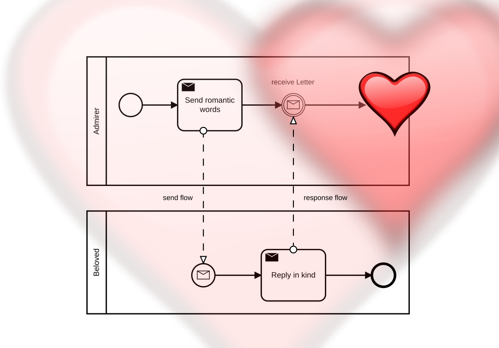
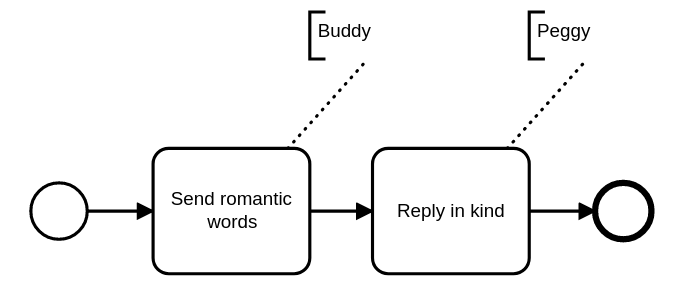
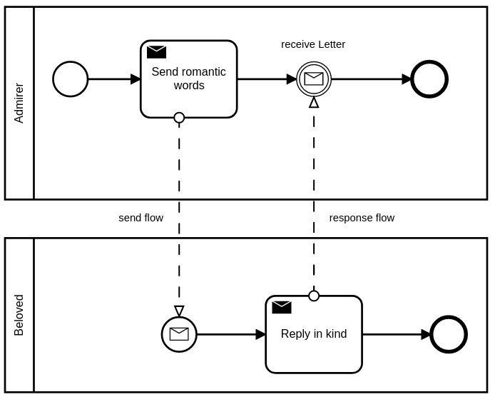
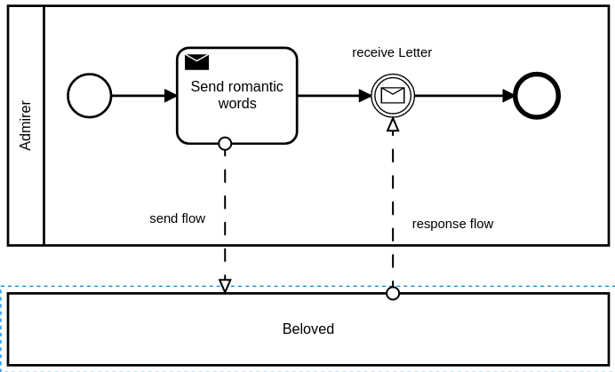
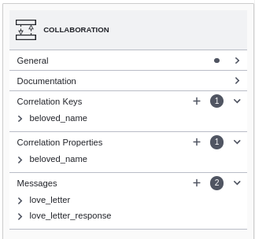
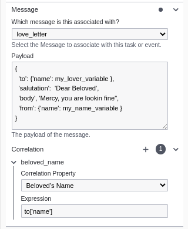
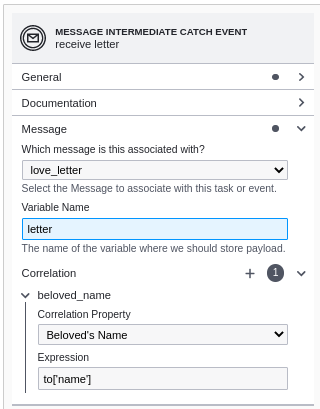

This is a deep dive into BPMN 2.0 Messages and how we implemented them in our open-source project SpiffWorkflow. This will be primarily of interest to people who care about the BPMN 2.0 standard or are developing larger applications with SpiffWorkflow that would benefit from having their BPMN diagrams communicate with each other. This is thick material, but there is a beautiful idea here well worth understanding and beneficial to anyone who is interested in prolonged communications between complex systems.
Adherence to the BPMN standard for Messages is exceedingly rare. There are few working examples that actually implement the standard or attempt to further its adoption. That isn’t surprising, as the BPMN specification’s paragraph on Message “Correlations” is one of the most dense and challenging bits of technical writing you will ever be so unfortunate as to confront. But it is beautiful at its heart, and we will try to capture that here.
The Concepts
In this section, we will cover the following major concepts: The Message itself, Collaborations, and Correlations. Understanding these concepts is critical to the following sections where we will describe their usage.
A Simple Message
Messages themselves are pretty simple. They have a unique name and a payload. If you imagine two people talking in a quiet room, that’s all that is needed.
Messages always have a one-to-one relationship. One sender to one receiver.
To better explain messages, we’ll build on a simple example that doesn’t initially require one. Buddy and Peggy, deeply in love, are in a tight embrace and Buddy says: “Peggy Sue, Oh how my heart yearns for you”, and Peggy, hearing it, responds: “Buddy Holly, how you make my heart jolly!” It is a perfect moment and can be captured in a happy little BPMN diagram.

But love isn’t always so simple. And neither is BPMN.
Collaborations
Let’s move Buddy and Peggy to a room full of romantic couples and track all the romantic profferings in BPMN. To do that we will need to use more generic terms and introduce a Collaboration diagram, as shown below. Collaborations encompass multiple participants/processes with interconnected messages.

Imagine we have 2 “Admirer” and 2 “Beloved” instances running at the same time: Buddy and Mary Jane play the “Admirer”, “Peggy” and “Tom” are the beloved. If we get this right, it’s a romantic evening. If we get it wrong, there will be blood.
It is all about context. If Buddy is saying nice things to Peggy, then we don’t want Peggy responding to Mary Jane. The critical concept here is a “conversation”, and just like in real life, there are some very complex social rules about how conversations work.
Some “conversations” in life are terrible. They seem to meander about from one thing to the next with no rhyme or reason, and no end in sight. That isn’t an actual conversation, it’s a nuisance — an area not covered by BPMN. We want good conversations, and that requires a subject or topic on which the conversation is grounded. All the messages back and forth should relate to the topic of the conversation. Or, to use the correct BPMN words, a Collaboration (the conversation) has a CorrelationKey (topic). THIS IS IMPORTANT
Correlations
Think of a correlation as the “Subject of the Conversation”. In our example, a good subject would be the beloved’s name: “Peggy”, “Tom”. The Admirers know who they admire, and each beloved knows their own name — so we have a kind of “Key” on which to base the conversation. You don’t get the Key wrong. You don’t yell out Tom’s name in a passionate moment with Peggy.
Collaborations, Messages, and Correlations have no visual representation in the BPMN diagrams. So I can’t draw you a picture. But they are first-order concepts carefully covered in the BPMN 2.0 standard. You have to manipulate them through some sort of “Properties Panel,” which we will cover in the next section.
The hardest concept for me, when I read the specification, was understanding that Correlations apply to the Collaboration as a whole. It is the subject of the conversation. It isn’t (as I struggled with for weeks) the address on an envelope. It is a sticky thing that should be used consistently across all the messages in a conversation. So as we continue, fight to keep this idea in your head: It’s all about having a good conversation about a specific subject.

Finally, it is worth noting that you will likely model these different processes in completely different BPMN files. So in the real world, you would describe the other process in a collapsed state as shown to the left. It will be up to the application that is executing these processes to coordinate the messages between them. We will cover that responsibility in the following section on Applications and the SpiffWorkflow Backend.
Implementation in SpiffWorkflow
This section will cover the changes to 4 different SpiffWorkflow applications in order to support messages as described above, working with the standard and attempting to avoid any custom BPMN extensions. We’ll tackle the BPMN editor first — as this is where many of the changes are visible, then we will delve into the XML and how the backend systems will process this information.
BPMN.js — SpiffWorkflow
This section includes our additions and modifications to the excellent open-source BPMN.js editor maintained by Camunda. The changes will impact the Properties Panel when specific visual elements are selected. Included here are actual screenshots from our working extensions to the BPMN.js editor. We’ll provide links lower in this article to our code repository so you can try it out!
Collaboration

When a collaboration is selected in the editor, we will display a new section called “Correlation Keys”. We want to make it clear at a glance that this conversation is based around the “beloved_name”, and that communications back and forth should relate to this name somehow.
But this can also be a cumbersome place to go as you are working through the diagram. So we will make it possible to edit these correlation keys elsewhere within the context of Send and Receive tasks and events.
Send Tasks, and Message Throw Events

When defining a message to be sent out in SpiffWorkflow, you will need to specify three things:
- The message id — a message name that should be unique among all messages in your system, but human-readable. And it should match up on the receiving end.
- The Payload — the content of the message. SpiffWorkflow is all about Python, so here we define the payload as a Python Dictionary.
- Any correlations directly related to this message, if there are any.
When this message is sent out, it will contain these three parts, and the SpiffWorkflow Backend (described later) will use the ID and Correlation to match this message up with the correct process.

Receive Tasks and Message Catch Tasks
When receiving a message, you can specify the message id (you can create a new id, or select it from a dropdown list). The Correlation here should match exactly the correlation defined in the other BPMN diagram if these are separate. We’ll talk about this as well in the section on SpiffWorkflow Backend, where it may be possible through API integrations to ensure these remain locked between disparate diagrams.
Resulting XML
The extensions we will add to BPMN.io will produce BPMN 2.0 compliant XML. We will create only one extension to the BPMN to complete this effort to make it easy to define the message payload.
Messages and Correlations will be defined within the root element, per the specification. The SpiffWorkflow Backend will work to ensure these values remain consistent across all processes, and can provide endpoints to verify the messages are correctly aligned. IMPORTANT: Don’t think about messages and correlations as belonging to a process. They do not. They belong to the system as a whole and can be maintained across different BPMN diagrams. The resulting XML in this case is:
<bpmn:message id="love_letter" name="Love Letter"/>
<bpmn:message id="love_letter_response" name="Love Letter Response" />
<bpmn:correlationProperty id="lover_name" name="Lover's Name">
<bpmn:correlationPropertyRetrievalExpression messageRef="love_letter">
<bpmn:formalExpression>lover.name</bpmn:formalExpression>
</bpmn:correlationPropertyRetrievalExpression>
<bpmn:correlationPropertyRetrievalExpression messageRef="love_letter_response">
<bpmn:formalExpression>from.name</bpmn:formalExpression>
</bpmn:correlationPropertyRetrievalExpression>
</bpmn:correlationProperty>Collaborations will contain the message flows, and will offer a Correlation Key that connects the correlation properties defined as described above.
<bpmn:collaboration id="my_collaboration">
<bpmn:participant id="buddy" name="Buddy" processRef="process_buddy" />
<bpmn:participant id="Person" name="Person" processRef="random_person_process" />
<bpmn:messageFlow id="love_letter_flow" name="Love Letter Flow"
sourceRef="ActivitySendLetter" targetRef="Event_0ym6ptw" />
<bpmn:messageFlow id="response_flow" name="response flow"
sourceRef="Activity_13eq2gr" targetRef="EventReceiveLetter" />
<bpmn:correlationKey name="lover">
<bpmn:correlationPropertyRef>Lover_first_name</bpmn:correlationPropertyRef>
<bpmn:correlationPropertyRef>Lover_last_name</bpmn:correlationPropertyRef>
</bpmn:correlationKey>
</bpmn:collaboration>Send Tasks and Receive Tasks can just reference the unique message id. The SendTask will include a custom SpiffWorkflow extension to define the payload in a simple and direct way, and is the only custom extension we will create as a part of this effort.
<bpmn:sendTask id="send_task_letter" name="Send romantic words" messageRef="love_letter">
<bpmn:extension>
<spiffworkflow:messagePayload>
{
'to': {'name': my_lover_var},
'from': {'name': 'buddy'},
'salutation': 'Dear Beloved',
'body': 'Oh how my heart yearns for you!'
}
</spiffworkflow:messagePayload>
</bpmn:extension>
<bpmn:incoming>Flow_1bl6jeh</bpmn:incoming>
<bpmn:outgoing>Flow_0tp8uut</bpmn:outgoing>
</bpmn:sendTask>In Closing
Most implementations of BPMN see messages as primarily a means of communicating with other external applications. This article is focused specifically on how multiple BPMN processes can communicate with each other in a loosely coupled way. Loosely enough, that in theory, one process could actually be an external application. Service Tasks are another way of sending and retrieving information from an external system.
References
When tackling a new area of SpiffWorkflow we take a careful look at other BPMN based systems. Here are links to some of the resources we consulted in addition to the official BPMN 2.0 Specification.
- https://youtu.be/8SYEc3dHnM4 (A great video on Camunda’s process)
- https://youtu.be/-UaFHzit7LA (Using Message Based Correlation in an Oracle BPM Process)
- https://www.trisotech.com/using-messages-in-executable-bpmn/ (Silver / Trisotech)
- https://community.bonitasoft.com/blog/when-use-call-activity-or-bpm-message (BonitaSoft)